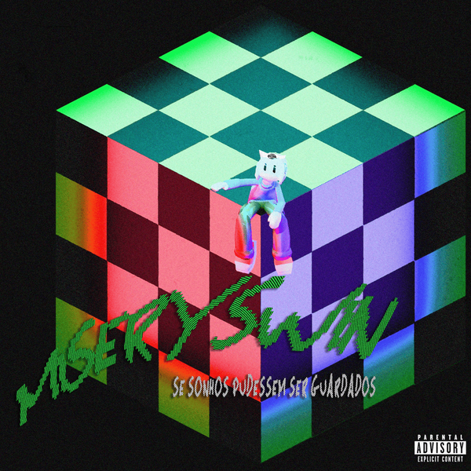
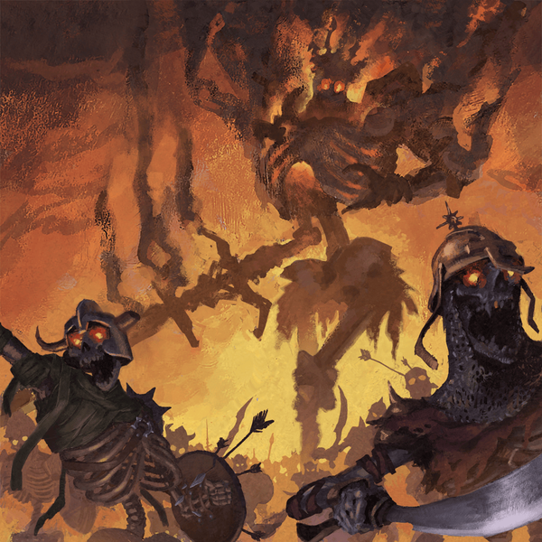

Principais álbuns

Miseryswin
Se sonhos pudessem ser guardados

Big Rush
Lit King

Big Rush
Performances de um romance porfírio
Sobre mim

Origem nos games
Tudo começou nos games. Cresci jogando, e os títulos que mais me marcaram foram sempre os independentes. jogos como Cuphead e Castle Crashers, feitos fora dos grandes estúdios, mas com uma identidade única e inconfundível.
A descoberta da música
Com o tempo, a música foi tomando cada vez mais espaço na minha vida. O gatilho foi simples: horas e horas no transporte público, que precisavam de uma trilha sonora. O que começou como passatempo virou uma das minhas principais formas de entretenimento.
O underground brasileiro
Em meados de 2024, descobri o lado underground da música brasileira e foi um ponto de virada. Um cenário cheio de artistas que produzem com liberdade, autenticidade e identidade própria. Me apaixonei de vez.
No fim, o que conecta tudo isso os games independentes, as horas no transporte, o underground brasileiro é algo muito simples: o amor. O amor pela arte feita com intenção, pela música criada sem fórmula. É esse mesmo amor que o Rootsounds busca demonstrar e compartilhar. Porque o que torna a arte verdadeira não é o tamanho do estúdio é a quantidade de coração que existe por trás dela.